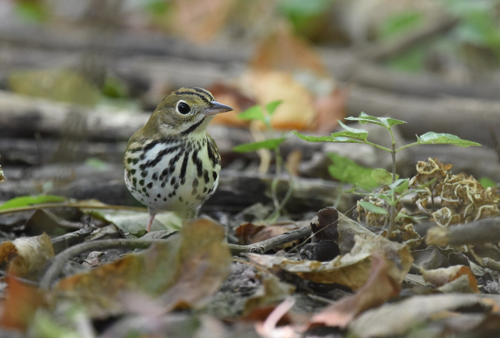
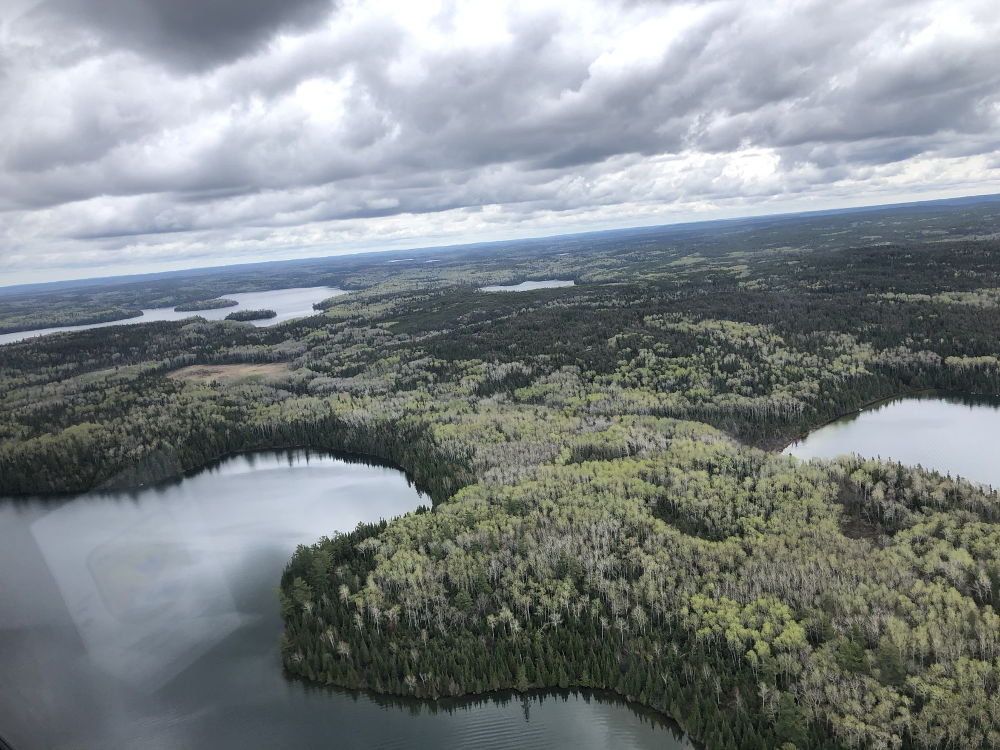
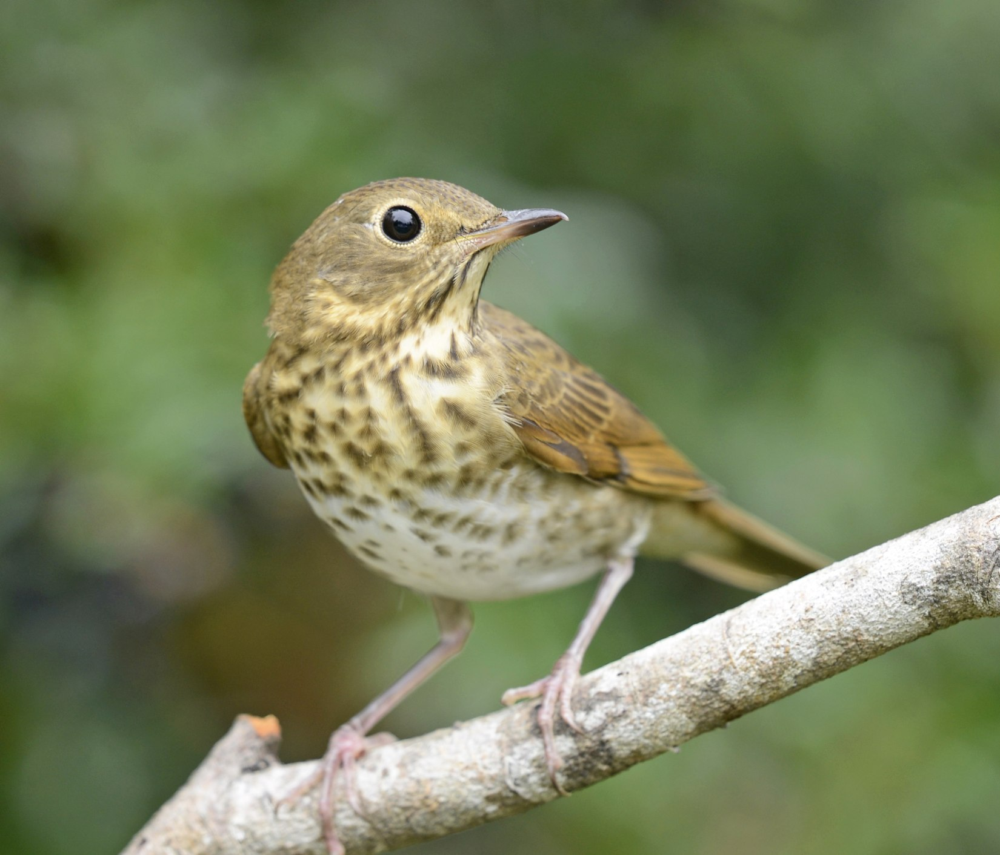

Birdcount
Learning Individual Acoustic Signatures for Automated Bird Population Estimation

How many birds
are singing here?
Track abundance over time.

Why counting is hard
Prior work and our contribution
2
HawkEars finds the songs
Field recording · 60 s
Detected songs · 2 s clips
Lapp’s model embeds each song
2 s clipFeature extractor512 numbers subset shown
Annotated test example · four songs
Group the songs. Count the singers.
Six ways to group songs
Linkage
Average linkage
Complete linkage
Graphs
Cosine graph
Pairwise MLP
Density & mixture
HDBSCAN
Dirichlet-process GMM
Inputs 512-D · PCA-16 · PCA-64
Tuning the distance threshold
0.25
Selected cosine distance
How average linkage merges songs
4 clusters
Evaluation on unseen locations
60%Development
131 recordings
131 recordings
40%Held-out test
97 recordings
97 recordings
Exact countRight number?
Count MAEHow far off?
Signed errorOver or under?
Matched accuracyRight song groups?
Average linkage counted best
Exact count accuracy
77.3%52.6% one-bird baseline
Count MAE0.247
Mean signed error−0.062
Matched accuracy89.4%
97 held-out recordings · 512-D embeddings
Where the count went wrong
22 errors across 97 recordings
14 undercounts
8 overcounts
Next species
Swainson’s
Thrush
- Well represented in our recordings
- Likely local during the survey
- Distinctive vocalizations

Limits of this benchmark
1species
97test recordings
Counts start from manually annotated songs.